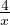
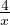

= .
= .Võrde põhiomaduseks on see, et jagatisena esitatud võrduse korral on diagonaalide korrutised võrdsed. Näiteks
 = näeme, et 2 ⋅ 6 = 3 ⋅ 4.
= näeme, et 2 ⋅ 6 = 3 ⋅ 4. Võrdekujuliseks võrrandiks nimetatakse võrdust, mis on võrde kujul ja mille üks liige on tundmatu. Näiteks
 = . Niisuguse võrrandi lahendamiseks kasutatakse
võrde põhiomadust 2 ⋅ x = 3 ⋅ 4 ehk 2 ⋅ x = 12 ehk x = 6.
= . Niisuguse võrrandi lahendamiseks kasutatakse
võrde põhiomadust 2 ⋅ x = 3 ⋅ 4 ehk 2 ⋅ x = 12 ehk x = 6.